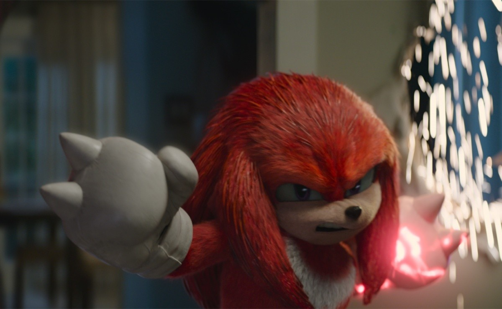
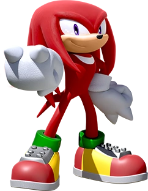
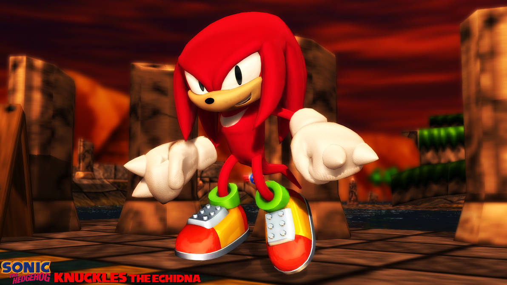
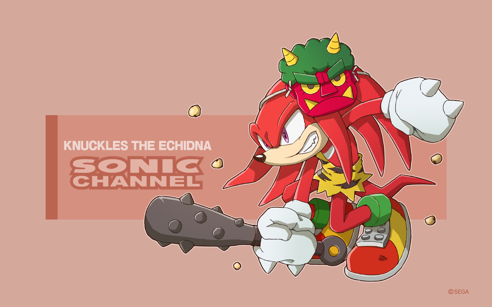

Knuckles the Echidna (ナックルズ· ·ザエキドゥナ, Nakkurusu za Ekiduna ?, lit. "Nudillos el Equidna") es un personaje de la saga de videojuegos Sonic the Hedgehog. Es un equidna rojo antropomórfico de 16 años de edad, que es a la vez poderoso físicamente y muy resistente. También es el guardián de la Master Emerald, una poderosa joya antigua que solemnemente deber proteger de cualquiera que busque abusar de su poder. También es el único descendiente superviviente de la raza equidna del Clan Knuckles.[5][6] Sus rasgos dominantes son su súper fuerza y los dos nudillos en forma de púas en cada uno de sus guantes, de donde se deriva su nombre, los cuales puede usar para cavar y escalar paredes. También puede atrapar el viento debajo de sus rastas para deslizarse por el aire. El nombre de Knuckles se deriva de los cuatro nudillos, dos en cada mano y que son en realidad pinchos afilados. De acuerdo con encuestas oficiales de Sonic Team, Knuckles es el cuarto personaje más popular de la serie, detrás de Tails, Shadow y Sonic. Solitario por naturaleza, Knuckles es independiente, testarudo y serio, pero crédulo y de mal genio hasta el final. Está completamente dedicado a su deber, pasa la mayor parte de su tiempo en Angel Island protegiendo a la Master Emerald, y rara vez se preocupa por nada que no sea de importancia. Sin embargo, cuando sus amigos y otras personas necesitan su ayuda, Knuckles siempre puede confiar en que estará dispuesto a dejar su puesto y demostrar que es un héroe fiel y de buen corazón. También es uno de los amigos y rivales más antiguos de Sonic. Aunque generalmente se le representa como el guardián de la Master Emerald, originalmente fue descrito como el guardián de las siete Chaos Emeralds de Angel Island.
   Knuckles es ferozmente leal a su tierra natal y hace todo lo que está en su poder para protegerla. Además, es el guardián legítimo de la Master Emerald por lo que es un rol al que toma mucha responsabilidad. A menudo suele custodiar dicha esmeralda de cualquiera que ose robarla o apropiarse de ella. Es un dedicado guerrero, serio e independiente por naturaleza. Su trabajo de guardián le hace ser una persona solitaria y desconfiada de los demás. Cuando no realiza sus deberes, Knuckles prefiere pasar su tiempo practicando sus habilidades de lucha, cazando tesoros o pasando el rato con sus amigos. Como tal, le importa muy poco lo que piensan los demás, lo que lo hace francamente honesto, directo y un tanto egocentrico.[15] Knuckles suele ser terco y prefiere hacer las cosas a su manera, lo que le hace chocar con los demás. Aunque a menudo se sabe que su temperamento lo mete en problemas, Knuckles también ha aprendido a usarlo a su favor canalizándolo en sus habilidades de lucha.
Knuckles es heroico, valiente, bondadoso y desinteresado, arriesga su vida para salvar a alguien o sacarlo de problemas, y muestra empatía por las personas, incluso si son villanos o enemigos. También es un amigo leal y afectuoso, que siempre está dispuesto a ayudar a sus amigos en situaciones difíciles y hará cualquier cosa para protegerlos. Cuando no está enojado, Knuckles es bastante relajado y nunca se quiebra bajo presión. También puede ser muy comprensivo a escondidas y no se muestra amable con las personas que no respetan o lastiman a sus amigos o inocentes, de ninguna manera. Después de haber vivido la mayor parte de su vida de manera aislada, Knuckles creció creyendo en la honestidad y tiene la firme y firme creencia de que hay algo bueno en todos, lo que siempre le permite darle a las personas segundas oportunidades. Sin embargo, debido a su falta de ingenio social, lo hace muy ingenuo, increíblemente crédulo, rápido para perdonar a las personas y fácilmente engañado, lo que le ha dado una historia de haber sido engañado por el Dr. Eggman. Esto ha hecho que Knuckles sea agresivo y sospechoso hacia cualquiera que considere cuestionable. Con el tiempo, sin embargo, Knuckles ha mejorado sobre esto y sospecha más sobre el truco de Eggman. Una vez que descubre que ha sido engañado, Knuckles puede enojarse bastante, pero rápidamente recupera la compostura lo suficiente como para comenzar a trabajar hacia una resolución inmediata. Aunque no es tonto, Knuckles a menudo es propenso a acciones precipitadas y desacertadas. Si bien no es más que elegir estrategias complejas, Knuckles a menudo elige la fuerza como la solución, empujándose a sí mismo a través de obstáculos mientras se enfoca en su objetivo e ignora otros factores en el camino. Del mismo modo, también puede ser bastante imprudente cuando entra en pánico sobre la Master Emerald, lo que es especialmente evidente durante el incidente del ARK, donde terminó luchando contra Sonic por los controles del transbordador espacial y causando que se estrellara, así como abandonar su se alía por el pánico debido a que los fragmentos de Master Emerald se perdieron en el espacio por una colisión con un meteorito que obligó a abrir la bahía de carga. Sin embargo, cuando está en su elemento correcto, Knuckles puede ser bastante inteligente y astuto, como colocar varias trampas exitosas para Sonic y Tails en Angel Island cuando llegaron por primera vez. También es capaz de aprender de sus errores. Knuckles también ha demostrado tener un alto grado de habilidades de liderazgo, más notablemente durante su tiempo como comandante de la Resistencia. Se nota que es muy carismático con discursos inspiradores, y tiene un don de planes audaces que proporcionaron a la Resistencia una ofensiva muy necesaria durante la Guerra para Recuperar el Planeta. Sin embargo, a pesar de todas sus habilidades como líder, Knuckles aún se distrae fácilmente y prefiere estar en el campo de batalla en lugar de en el centro de comando.